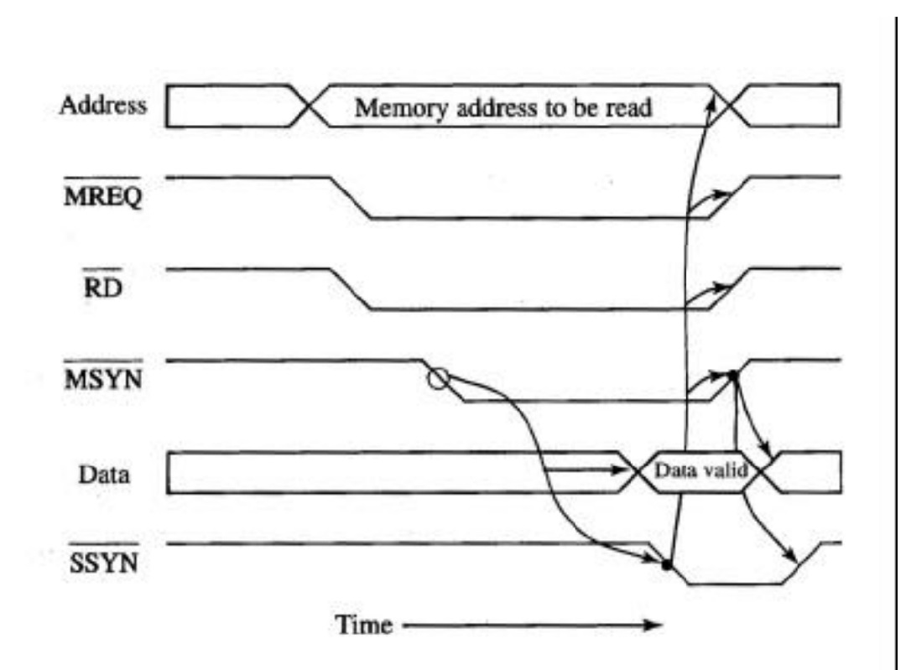

Un bus asincrono è un tipo di bus in cui la trasmissione dei dati non dipende da un segnale di clock centrale. Invece di essere sincronizzati da un unico clock, i dispositivi comunicano tra loro utilizzando segnali di controllo. Questi segnali consentono ai dispositivi di "mettersi d'accordo" su quando trasferire i dati senza la necessità di un riferimento temporale centralizzato.
Il vantaggio principale di un bus asincrono è che non è necessario un segnale di clock condiviso tra tutti i dispositivi. Ogni dispositivo può operare alla sua velocità e solo quando è pronto a trasmettere o ricevere dati.
Nei bus asincroni, la sincronizzazione avviene tramite un meccanismo chiamato handshaking. Questo significa che i dispositivi utilizzano segnali di controllo per informarsi reciprocamente della disponibilità dei dati. In altre parole, prima che un dispositivo possa inviare o ricevere dati, deve stabilire che l'altro dispositivo è pronto.
Ad esempio, un dispositivo può inviare un segnale di richiesta per iniziare il trasferimento dei dati. Il dispositivo di destinazione, una volta pronto, risponde con un segnale di conferma. Solo quando entrambi i dispositivi hanno stabilito di essere pronti, i dati vengono trasferiti.